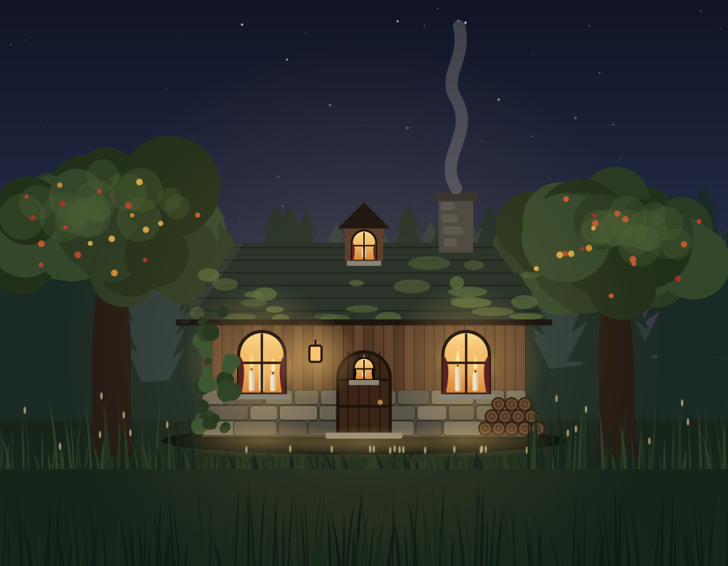
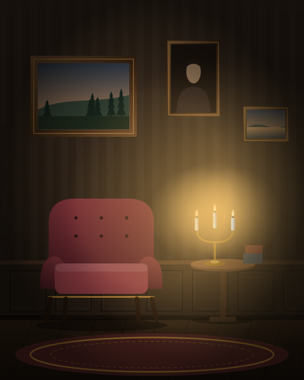
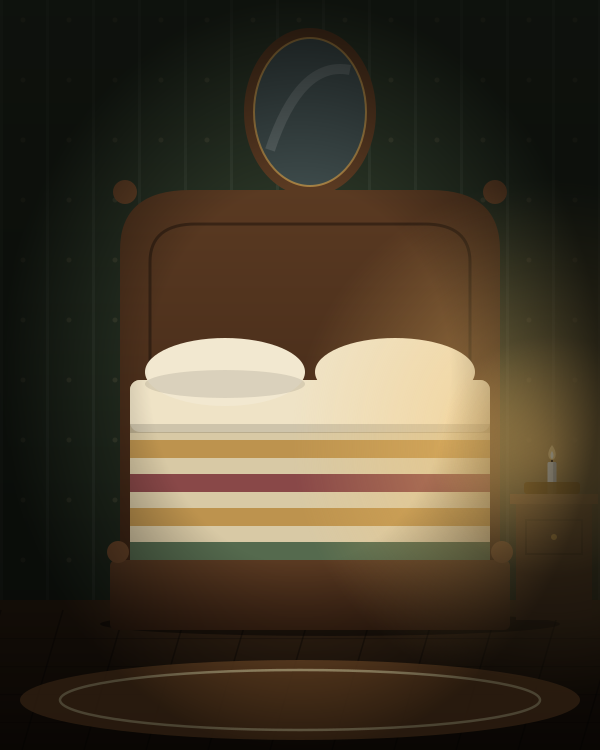
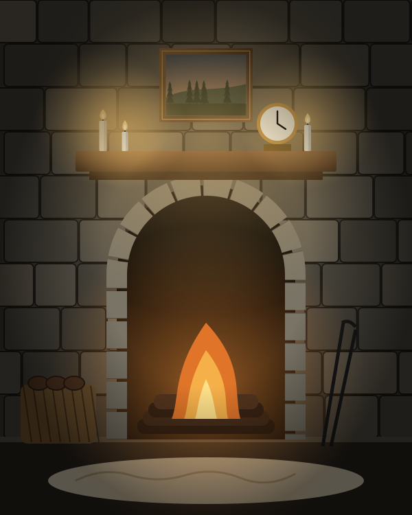
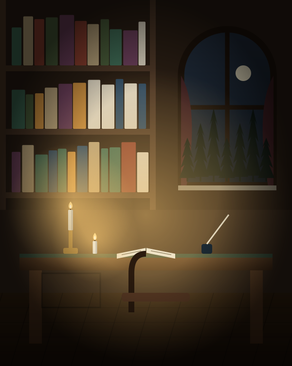
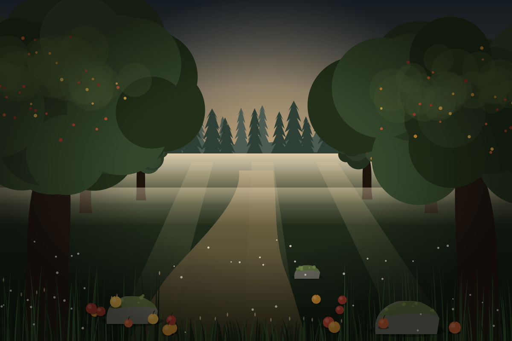
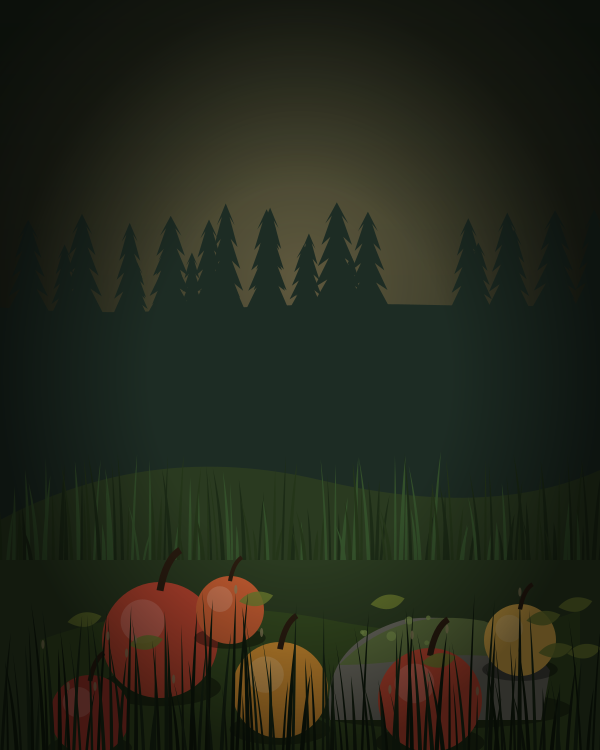
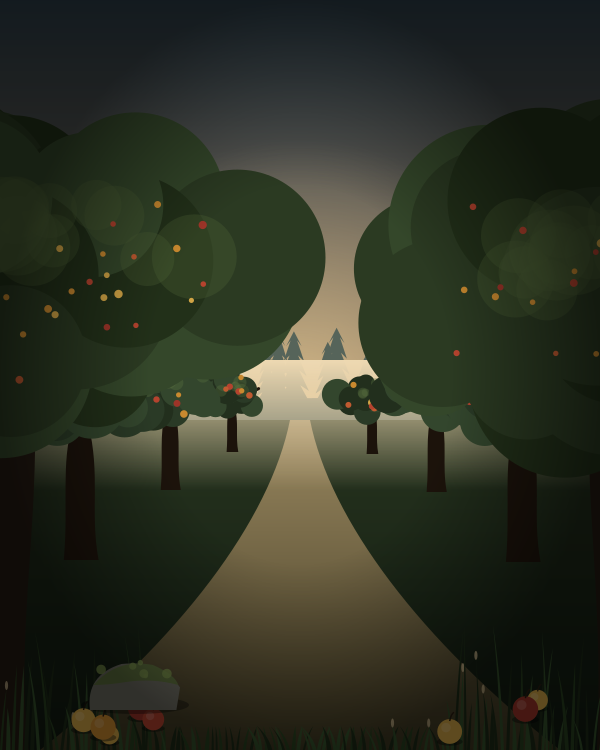
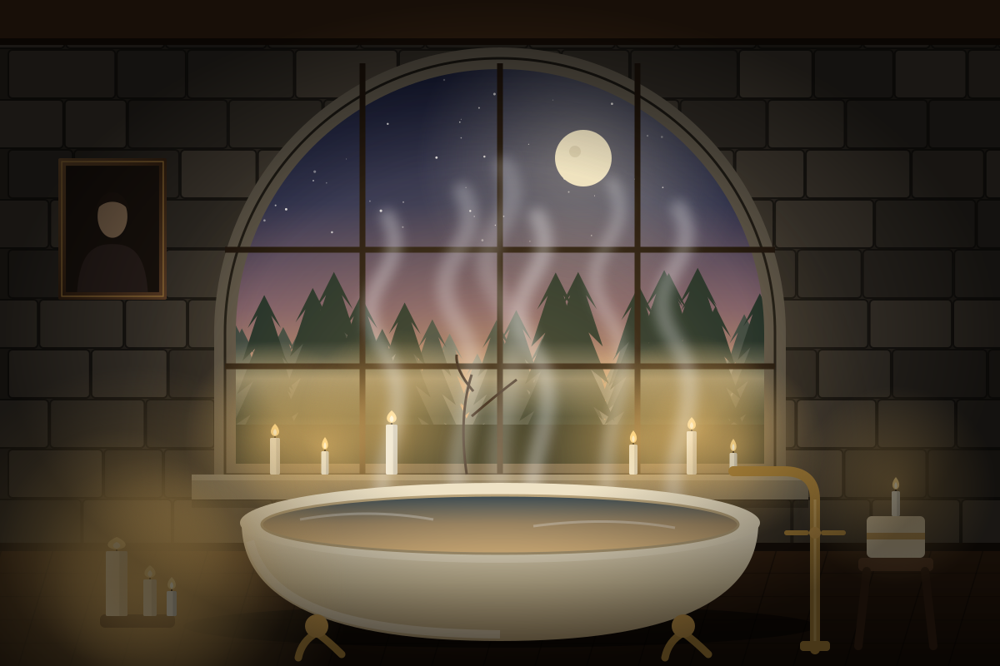

Weekend
2 nights
€260
- The whole apartment
- Firewood & candles included
- Basic pantry set
A secluded apartment, two hours from Oslo
A hidden apartment deep in the forest: old wood, candlelight and a garden nobody tends. As if you had stumbled upon a forgotten house and found the lamps still lit.
The place
You leave the road where the signal fades. The pines close in behind you, and then, between crooked apple trees, a low house with candles in the windows.
Nobody is waiting for you here. The rooms smell of old wood and woodsmoke, the paintings watch quietly from their frames, and the clock on the mantel is the only thing that keeps time.
The apartment is yours alone, and it has no signal at all. We made sure of that.
So put the phone in the chest. The evening is long.
How a stay begins
At dusk, ideally. We light the candles, show you the stove and lock your phone in an old oak chest. For emergencies there is a landline.
Read by candlelight, wander the orchard, soak in the bath, sleep. There is no schedule and no alarm clock.
On the last morning we hand the phone back. Most guests admit they are in no hurry to take it.
The apartment
Two bedrooms, a parlour with a stone hearth, a study lined with old books and a kitchen with a long, scarred oak table. Antique furniture, worn rugs, wool and linen. Every room is lit by lamps and candles, and we leave matches on every mantel.
There is no TV, no Wi-Fi and no sockets by the beds. Just old wood, stone and a great many soft shadows.







The orchard
Behind the house the old orchard has gone wild. Apple and pear trees older than anyone can say lean into one another, the grass grows to your waist, and windfalls lie where they landed, sweet and bruised, humming with wasps until the first frost.
Moss has taken the stones. Narrow paths wander off between the trunks and simply disappear. Follow one, if you like. Nobody minds if you get a little lost.



In autumn, take a basket from the porch. The apples are yours.

The bath
On the upper floor a freestanding iron bath waits beside the largest window in the house. Candles on the stone sill, a little steam on the glass, and below you nothing but the dark crowns of the pines fading into mist.
The water is hot, the light is low. Nobody will ask you to be anywhere.
Your day
You wake to grey light through old glass. Coffee in the kitchen while the stove ticks and the fog lifts off the orchard.
Wander the orchard, read in the study, walk to the lake fifteen minutes away, or nap under a wool blanket.
You light every candle, cook at the long table and lose (or win) a game of cards by the hearth.
The bath above the treetops, then stars you can’t see from the city. You fall asleep before ten and are surprised by it.
After dark
Move your cursor to carry the candle.
Signal: none
Your phone and laptop stay in the oak chest from arrival to departure.
For emergencies there is a landline, and we live down the path, 24/7.
Want photos? Borrow our film camera. It’s on the shelf by the door.
We don’t force anyone. If it gets hard, tell us and we’ll help.
Silence goes both ways: we won’t message you either.
These rules aren’t a punishment. They’re a gift to yourself.
Prices
2 nights
€260
3 nights
€420
7 nights
€790
Prices are for the entire apartment, up to 4 guests. Any other length of stay is €130 per night.
Getting there
120 km from Oslo. The last five kilometres are a forest track where GPS usually goes quiet, so we send you a written route in advance.
We can also meet you at the station and drive you up. Just tell us when you book.
Ask for the route Oslo
Fjern skog
GPS goes quiet here
Oslo
Fjern skog
GPS goes quiet here
Guests
“I felt as if I had walked into someone’s memory. I did not want to check the time.”
“I ate an apple straight from the grass and forgot I owned a phone.”
“The bath at dusk, the pines below the window. My husband and I finally talked. Not about logistics.”
Questions
Yes. It fills the ground and upper floors of an old forest house, and you have all of it to yourselves. Your hosts live in a cottage a short walk down the path.
There is a landline in the hall, and we’re close by around the clock.
Yes, it’s the heart of the stay. If you need it, ask for “emergency mode”: one call a day, out on the porch.
We use proper holders and lanterns, keep extinguishers and smoke alarms in every room, and walk you through it on arrival.
Children from age 6 are welcome, and dogs by arrangement. Tell us when you book.
Warm clothes, sturdy shoes and a book you’ve been meaning to read. We have the rest.
Free of charge up to 7 days before arrival.
Pick your dates and we’ll confirm within a day. No online prepayment.
Stay for a while